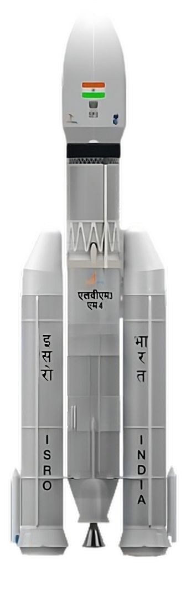

Chandrayaan-3 is the third installment in India's lunar exploration program, marked a historic achievement with its successful launch on July 14, 2023. Developed by the Indian Space Research Organisation (ISRO), the mission included a lunar lander named Vikram and a rover named Pragyan, making India the fourth country to achieve a successful Moon landing, specifically on the lunar south pole
The mission was fuelled and powered by the LVM3-M4 or FatBoy , India's largest liquid fuel cryogenic engine.The LVM3 M4, also known as GSLV Mk III, played a crucial role in launching Chandrayaan-3 into its lunar trajectory. This powerful and versatile rocket, developed by ISRO, features a robust cryogenic upper stage (C25) that propelled the spacecraft beyond Earth's orbit. The precision of the LVM3 M4 ensured the successful deployment of Chandrayaan-3, showcasing India's prowess in developing advanced launch vehicles for ambitious space exploration missions.
Chandrayaan 3
India's mission to moon

India's Fatboy


Height : 43.5m
Number of Stages : 3
Vehicle Diameter : 4m
Payload Capacity : 4 tonnes
Lift Off Mass : 640 tonnes
Largest Cryogenic Engine
Why moon ?
India's Chandrayaan-3 mission has not just landed on the Moon but has boldly stepped into uncharted territory – the southern pole. This strategic move makes India the first nation to explore this mysterious region, unlocking a treasure trove of lunar secrets. The primary focus of this historic mission lies in solving the long-standing mystery of water on the Moon.
With the help of special scientific tools India aims to decipher the presence and distribution of water-ice in the Moon's permanently shadowed areas.India aims to decipher the presence and distribution of water-ice in the Moon's permanently shadowed areas.
The lunar landscape, with its unique geological features, holds clues to the Moon's formation and evolution. Chandrayaan-3 is equipped to unravel the secrets buried beneath the lunar surface, providing insights into the chemical and elemental composition of the soil. By investigating seismic activities around the landing site, scientists aim to delineate the structure of the lunar crust and mantle, contributing to our understanding of celestial bodies' geological processes. These revelations are crucial for future lunar missions, space habitats, and potential resource utilization.
With the help of special scientific tools India aims to decipher the presence and distribution of water-ice in the Moon's permanently shadowed areas.India aims to decipher the presence and distribution of water-ice in the Moon's permanently shadowed areas.
The lunar landscape, with its unique geological features, holds clues to the Moon's formation and evolution. Chandrayaan-3 is equipped to unravel the secrets buried beneath the lunar surface, providing insights into the chemical and elemental composition of the soil. By investigating seismic activities around the landing site, scientists aim to delineate the structure of the lunar crust and mantle, contributing to our understanding of celestial bodies' geological processes. These revelations are crucial for future lunar missions, space habitats, and potential resource utilization.

Planning the mission
In meticulously planning the Chandrayaan-3 mission, the Indian Space Research Organisation (ISRO) showcased its strategic prowess, technological finesse, and collaborative spirit. The key figures responsible for orchestrating the mission, emphasizing their expertise and roles. ISRO Chairman S Somanath's leadership in designing the Bahuballi rocket, Director Unnikrishnan Nair S spearheading rocketry research, and Project Director Veeramuthuvel P's dedication to Chandrayaan-3 are highlighted. The collaborative effort involving nearly 1,000 engineers and scientists, despite challenges posed by the Covid-19 pandemic, underscores the depth of commitment and expertise embedded in the mission's planning.


A focal point in the planning process was the incorporation of lessons learned from the Chandrayaan-2 mission, particularly addressing the unexpected variations in the Lander module's performance. This emphasis on continuous improvement showcased ISRO's commitment to overcoming setbacks and enhancing the robustness of its lunar exploration programs. The planning phase also underscored the collaborative nature of the endeavor, with contributions from various ISRO centers and external partners in areas such as satellite design, thermal engineering, communication subsystems, and more.
Challenges Ahead
"Chandrayaan-3 is all about doing more with less. When a country has limited capabilities but dreams big, it has to be smart to use the love and gravity of Mother Earth to go all the way to the moon.” said S. Somanath, ISRO chairman
LVM-3 may be a bahubali, but it still lacked the punch to send the 3,921kg Chandrayaan-3 satellite on a direct flight to the moon. ISRO engineers devised a way to overcome this big problem―use the earth’s gravity to slingshot Chandrayaan-3 to the moon. Using the spacecraft’s propulsion module, the scientists gradually kept raising its orbit and velocity. On August 1, Chandrayaan-3 attained enough ‘escape velocity’ to leave Mother Earth’s loving hold and go on its solitary journey of 3.84 lakh kilometres to the moon.
“This was a very, very tricky operation requiring great precision, since the approach velocity had to be just right,” said S. Somanath, ISRO chairman. If it were too fast, the satellite would have bounced off and become a flyby mission. If it were too slow, it could have been pulled in and crash-landed on the lunar surface.
LVM-3 may be a bahubali, but it still lacked the punch to send the 3,921kg Chandrayaan-3 satellite on a direct flight to the moon. ISRO engineers devised a way to overcome this big problem―use the earth’s gravity to slingshot Chandrayaan-3 to the moon. Using the spacecraft’s propulsion module, the scientists gradually kept raising its orbit and velocity. On August 1, Chandrayaan-3 attained enough ‘escape velocity’ to leave Mother Earth’s loving hold and go on its solitary journey of 3.84 lakh kilometres to the moon.
“This was a very, very tricky operation requiring great precision, since the approach velocity had to be just right,” said S. Somanath, ISRO chairman. If it were too fast, the satellite would have bounced off and become a flyby mission. If it were too slow, it could have been pulled in and crash-landed on the lunar surface.

Nilesh Desai, Director of ISRO's Space Applications Centre, said the rover's movement was impacted by visibility issues, boulders, and craters on the lunar surface. The South Pole of the Moon has an uneven surface and very deep craters, that are making it difficult for the rover to move freely and smoothly.
The other day, the rover faced its first obstacle when it located a 4-meter diameter crater positioned three meters ahead of its location. The ISRO redirected the rover to a safer path. Chandrayaan-3 Pragyan rover's speed was slowed down due to the nature of the surface of the Moon's South Pole

Mission Sequence
Chandrayaan-3 embarked on its celestial journey, propelled by the mighty LVM3-M4 rocket, soaring into the cosmos on 14 July 2023, at 09:05 UTC. The launch spectacle unfolded at the Satish Dhawan Space Centre Second Launch Pad in Sriharikota, Andhra Pradesh, India.
The mission commenced with Chandrayaan-3 gracefully entering an Earth parking orbit, characterized by a perigee of 170 km (106 mi) and an apogee of 36,500 km (22,680 mi).
Lift Off
0.00s
S200 Ignition
Burning Phase
127.00s
S200 Solid fuel burning
Payload Fairing Separation
194.96s
PLF Separation
Engine Separation
305.56s
S200 Solid fuel burning
Chandrayaan-3 Separation
969.42s
Lander Module Separated